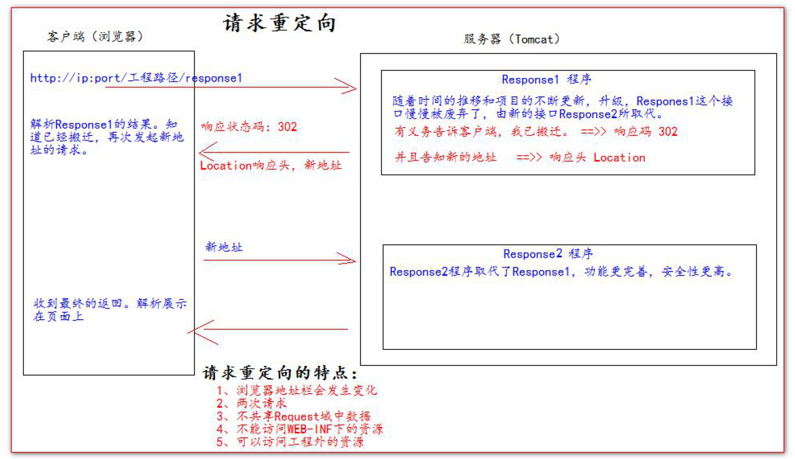

HttpServletResponse类
HttpServletResponse 类和HttpServletRequest 类一样。每次请求进来，Tomcat 服务器都会创建一个Response 对象传递给Servlet 程序去使用。HttpServletRequest 表示请求过来的信息，HttpServletResponse 表示所有响应的信息，我们如果需要设置返回给客户端的信息，都可以通过HttpServletResponse 对象来进行设置
1.1 两个输出流
- 字节流
getOutputStream();常用于下载（传递二进制数据） - 字符流
getWriter();常用于回传字符串（常用）
两个流同时只能使用一个。使用了字节流，就不能再使用字符流，反之亦然，否则就会报错。
1.2 往客户端回传数据
public class ResponseIOServlet extends HttpServlet {
@Override
protected void doGet(HttpServletRequest req, HttpServletResponse resp) throws ServletException,
IOException {
// 解决响应中文乱码方案
resp.setContentType("text/html; charset=UTF-8");
// 往客户端回传字符串数据。
PrintWriter writer = resp.getWriter();
writer.write("response's content!!!");
}
}
请求重定向
请求重定向，是指客户端给服务器发请求，然后服务器告诉客户端说。我给你一些地址。你去新地址访问。叫请求重定向（因为之前的地址可能已经被废弃）。

resp.sendRedirect("http://localhost:8080");